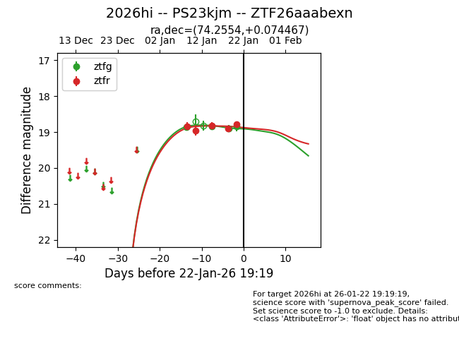
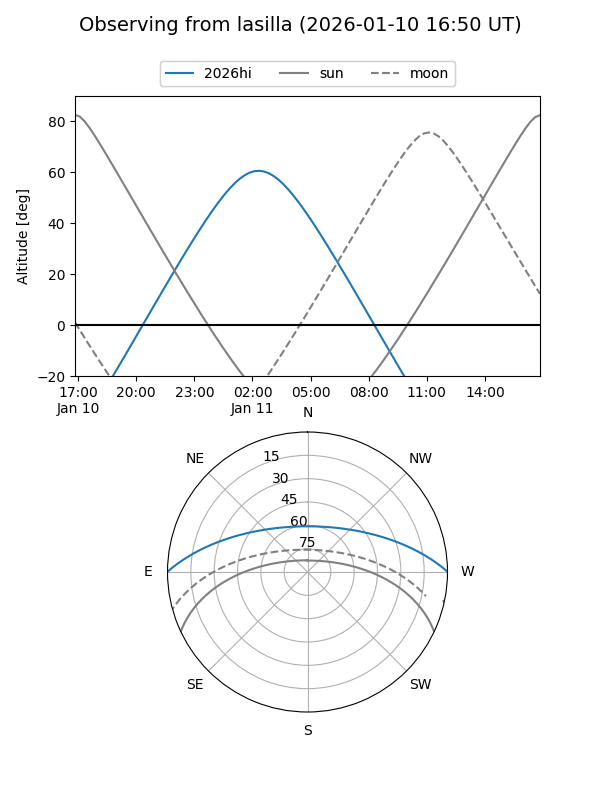
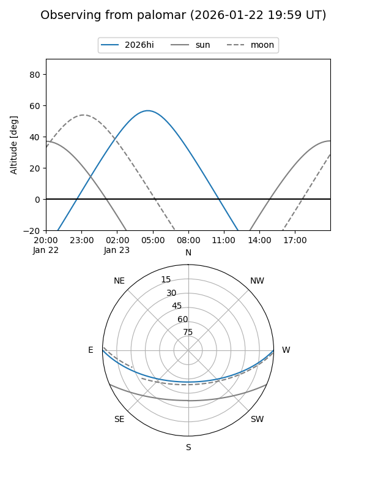
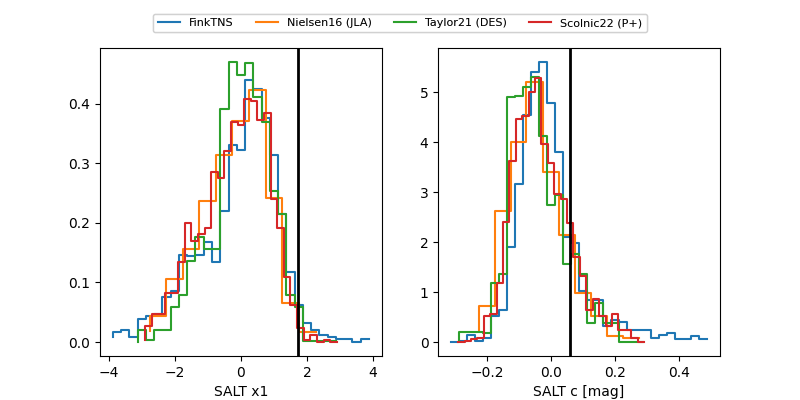

2026hi
Target 2026hi at 2026-01-25 13:11
Aliases and brokers:
FINK: link
Lasair: link
ALeRCE: link
TNS: link
YSE: link
alt names
ZTF26aaabexn (ztf,fink_ztf)
2026hi (tns,yse)
PS23kjm (panstarrs)
Coordinates:
equatorial (ra, dec) = 74.2554,+0.07447
equatorial (HMS+DMS) = 04:57:01.30,+00:04:28.08
galactic (l, b) = (198.8973,-25.18185)
Flags:
Photometry:
last ztfg=18.85, ztfr=18.78
4 ztfg, 5 ztfr detections
Lightcurve

Visibility


Additional plots
